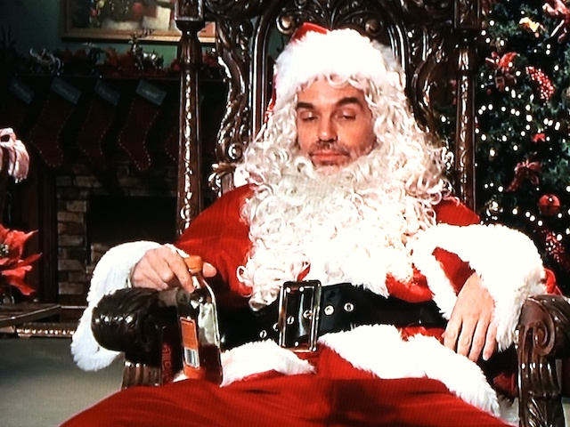

Bad Santa's Coco

Description
This Christmas cocktail is not for the faint of heart, it'll knock the nicest
of big girls and boys down a notch to the naughty list.
Ingredients
- 1 pack of coco mix
- 8 oz oatmilk
- 2 oz bourbon
- .5 oz peppermint schnapps
- 1 crushed candycane
- 1/4 cup marshmellow
- Leftover bourbonin flask of your choice or just hang onto the bottle
if you just cannot be bothered
Steps
- Pour your oatmilk into a small sauce pan and bring to gentle boil
on medium heat
- While oatmilk is heating crush your candycane on a plate or in
a bowl. Dip the rim of your mug or glass in the oatmilk, then press
the rim into your crushed candycane, and make three small circles
while applying light pressure to rim you beverage with candycane.
- Combine oatmilk, bourbon, and schnapps in your mug and gently
stir for 15 seconds
- Sprinkle marshmellow on top and add a dash of remaining crushed
peppermint
- Keep bourbon on hand to supplement as needed